Answer a few plain questions. Get a normalized PostgreSQL schema whose rules live in the database, deployed in a single transaction, with a diagram of exactly what was built.

The questions
You never have to think in tables. Each question is shaped so that the answer lands in the right place, which is what normalization is.
What do you keep track of?
Every thing becomes its own table, with an id and a created_at time.
Every fact in one placeWhat do you record about each one?
Only the facts about that thing, each with a type that knows its own rules.
3NF · nothing but the keyCan it have more than one?
Phones, tags, allergens: a list gets its own table, one value per row.
1NF · one value per cellDoes it belong to one of these?
A link to the parent, never a copy of the parent's facts. And you choose what a delete does.
3NF · no transitive factsWhat pairs up many-to-many?
A pair table keyed by both links, holding only what's true of the pair.
2NF · the whole keyA spec you can keep.
The answers are saved as JSON. Edit it, check it, regenerate the schema anytime.
bakery.jsonThe checks
The checker lists every problem at once, explains which rule it breaks, and says how to fix it. These are its real messages.
The rules
Constraints run on every write, from every program. Pick a rule to see where it lives in the generated SQL.
The deploy
The whole schema is one BEGIN … COMMIT run with ON_ERROR_STOP. If anything fails, psql stops before COMMIT and PostgreSQL rolls everything back. There is no half-built schema to clean up.
The picture
After deploying, the tool reads PostgreSQL's own catalog and draws it. The tests check that this matches what you asked for, line for line.
The outcome
The bakery example: customers, products, orders and reviews became a schema the database itself keeps honest.
tables, including two lists and one pair table, all in 3NF
kinds of bad rows the live tests prove PostgreSQL rejects
half-built schemas: a failing deploy leaves nothing behind
Python standard library and psql, nothing to install
Get started
From the schema-starter folder, with PostgreSQL's psql on your PATH.
python -m schema_starter initanswer the questionspython -m schema_starter check salon.jsonevery problem at oncepython -m schema_starter deploy salon.json --db mydbcreate it, draw itpython -m schema_starter erd --db mydb --schema salon --svg -o salon.svgdraw any schemaSource, tests and the full README: github.com/ajesqueda/data-engineering-lab